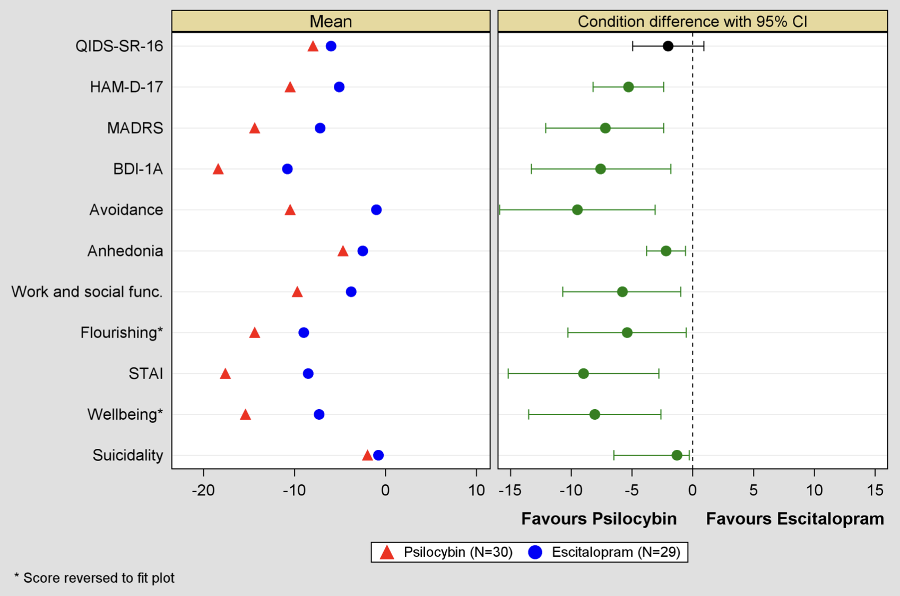
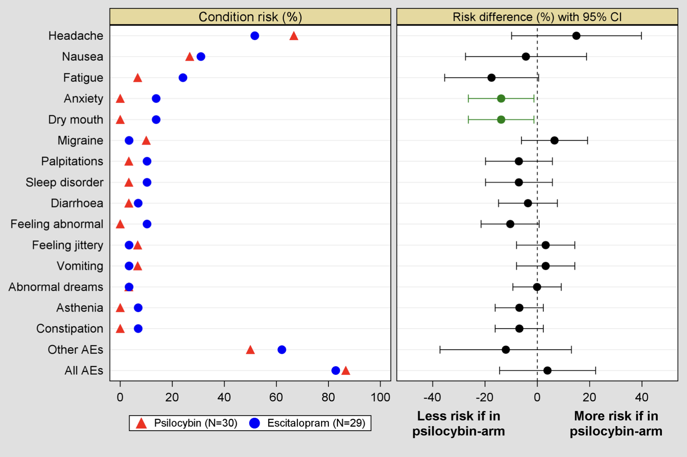

Data vs spin: commentary on “Trial of Psilocybin versus Escitalopram for Depression”
On 14 th April, the prestigious medical journal, The New England Journal of Medicine, published a landmark report on a clinical trial comparing psilocybin therapy with a standard antidepressant medication, the selective serotonin reuptake inhibitor (SSRI), escitalopram, in the treatment of depression. The trial was conducted by the Centre for Psychedelic Research, Imperial College London. This head-to-head with a current first line treatment for depression - one of the best performing SSRIs - is the most rigorous test of a psychedelic medicine to-date.
A bit of context: depression is the leading contributor to the global burden of disease and number one for life years lost to disability, well ahead of cancer for example. Much of this disability relates to absenteeism and presenteeism – which means working when depressed and impaired. Reports of depression and anxiety have increased during the Covid-19 pandemic 1 . Most people who take their own life, will have suffered a mood disorder like depression, and suicide is the most common cause of death for young men.
Selective serotonin reuptake inhibitor antidepressants are first-line treatments for depression. In 2018, the percentage of the UK adult population prescribed an antidepressant was 17%, similar to the US 3 , but annual antidepressant prescription rates regularly increase, so the current percentage may be even higher 2 . The antidepressant market is estimated to be worth around $15B 4 . Response rates to SSRI antidepressants tend to average around 50% and meta-analyses indicate they are barely more effective than placebo 5 . Common complaints about SSRIs include that they blunt one’s emotional range, cause sexual dysfunction, drowsiness and other side effects, take weeks to work, and are difficult to come off.
Optimism about the therapeutic potential of psychedelic compounds began to build in the 2010s and is still trending upwards. At least five phase 2 clinical trials have shown promising results of psilocybin on depressive symptoms. Response rates are often calculated for these studies by counting the number of people whose depression scores decrease by at least 50%. The most recent trial reported 71% response rates 4 weeks post treatment, markedly higher than what we have become accustomed to with SSRIs or psychotherapy. Using the same measure (the so-called ‘HAM-D’), response rates to psilocybin in our recent trial were 75%, versus 24% in the escitalopram group. On another measure which required patients to rate their own depression, response rates to psilocybin therapy were 70% versus 48% in the escitalopram group.
There are a couple of things I’d like to share about how results of this trial are described in the paper. My intention is to give the reader some insight about why they have been framed as they have. I anticipate many reading the paper will be struck by phrases like “no clinical conclusions can be drawn about these data” and “[the trial] did not show a significant difference in antidepressant effects” and think “hold, on, how does this compute with the much higher response and remission rates, breadth of improvements and even the positive side effect profile of psilocybin versus escitalopram?" To which my reply would be: “yes, quite!”
So, let me explain: the original manuscript submitted to NEJM described the results of the trial in a different way to how they now appear in the paper, so how did this happen? The original paper passed relatively easily through review but was then taken on by a handling editor and large sections were re-written. I have never experienced an editorial process quite like it to be honest. Typically, the majority of the back and forth is with reviewers.
On top of the understandable desire to see those satisfying words “we are pleased to accept your manuscript for publication in The New England Journal of Medicine’, was the consoling thought that “at least they can’t change the actual results!” and “readers will be able to look at the values and interpret them themselves.” One slight issue here, however, is that many readers only proceed as far as the abstract and need to go further to properly process the study’s results. The discrepancy between the actual trial results and the framing of them is one of the reasons why I have been so keen to comment on the paper in the media and via outlets like this. So, let me emphasise again, please do look at all of the values presented in the paper and its supplementary appendix: the response and remission rates, secondary outcomes, and the side effect data. Much of these data can only be found in tables and figures contained within an appendix that accompanies the paper, including these forest plots below. All horizontal bars shown in green reflect a >95% confidence level that there is a population difference between the groups. QIDS, HAM-D, MADRS and BDI are measures of depression and STAI measures trait anxiety. These data are for baseline versus week 6, the end of the trial.


In most studies there is a predefined primary outcome to avoid the risk of bias in post-trial reporting. This study used multiple depression measures (QIDS-SR-16, HAM-D, MADRS, BDI-1A) among which QIDS was defined as primary, a largely arbitrary choice, and in hindsight, not a good one. This was the only outcome measure where the psilocybin vs SSRI difference was not statistically significant. It was significant on all of the other depression measures! Had we chosen any of the other depression measure as primary outcome, the study’s results would have been reported quite differently.
Bias is a major issue in medical science. The reporting of clinical trial data pertaining to the safety and efficacy of SSRIs has received much scrutiny, and it is right that it has. Commercial forces have contributed to a number of scandals like this one6. It is also right that clinical research with psychedelics be scrutinised by the same high standards. Psychedelic research is at particular risk of psychological biases, such as confirmation7 and expectancy biases8. Researchers in our group recently demonstrated that the positive effects associated with ‘microdosing’, i.e., the taking of very low doses of psychedelics, are driven mostly by positive expectancy9. Could the same be true of higher dose psychedelic therapy? If ‘yes’, would this render psychedelics little more than positive-expectancy enhancers? If it does indeed transpire that positive expectancy is a substantial component of psychedelics’ therapeutic action, is this a problem? Expectancy is always involved when one receives a medical treatment. What if we view it as a potentially exploitable ally rather than a scientifically confounding foe?
How do I feel about the conservative framing of our trial results? I would be lying if I said I was entirely comfortable with it. As a scientist, I am passionately committed to scientific rigour, which includes being mindful, and properly declaring of, all potential areas of bias. In medical science we refer to the balanced treatment of different trial conditions as clinical equipoise, which means that you approach the trial with uncertainty about the relative merits and limitations of each treatment or intervention being assessed10.
In framing the trial results as showing no difference between the two conditions, we are being faithful to the principle that you should judge trial results first and foremost by the results of the main, pre-selected outcome. To get a better understanding of why we do this – check out this case6. Also, in saying no conclusions can be drawn on the secondary outcomes due to the absence of correction for multiple testing, we are recognising the risk of false positives when casting a wide ‘fishing net’. However, when one factors in how consistently the secondary outcomes favoured psilocybin and by what margin, it is easy to suspect that the miss on the primary outcome is in fact a ‘false negative’11. Added to this is the fact that we predicted psilocybin’s superiority on well-being ahead of the trial. In actual fact, although we selected the QIDS as our main outcome, we had not predicted psilocybin’s superiority on this measure. Psilocybin actually outperformed our pre-trial expectations!
Returning to the matter of bias, set in a context of unbridled enthusiasm and inflated expectations about the therapeutic potential of psilocybin, I would rather be challenged for being too conservative than promotional. Perhaps it is best we view the journal’s conversative marshalling of the study’s write up as consistent with statistical good practice and reflective of high standards of scientific rigour upheld by a top journal. Moreover, we might also view it as a healthy counterweight to what would otherwise have been too incendiary a finding: superiority of psilocybin therapy versus a leading SSRI antidepressant!
Yes - the tide is changing, yes - psychedelic medicine is progressing, and yes - it appears it may have some advantages over current treatments but let us not hasten a change that is already unfolding. The case for psychedelic therapy will be all the more compelling if it can be shown to pass the most rigorous scientific scrutiny.